Microprocessor
- Bit
- nibble
- byte
- word(16 bit number)
- Double word(32 bit binary number)
- Multiple word(64,128... bit binary number)
- Memory Capacity
-
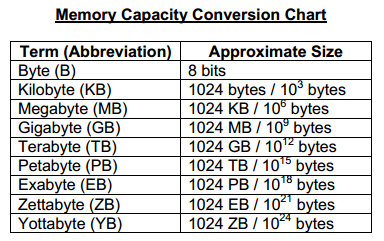
- Data
- Address(8085/86 use 16/20 bit)
- Bus
- CPU Bus
- System Bus
- RIM & SIM
- RIM
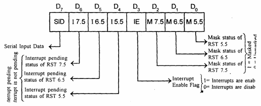
- SIM
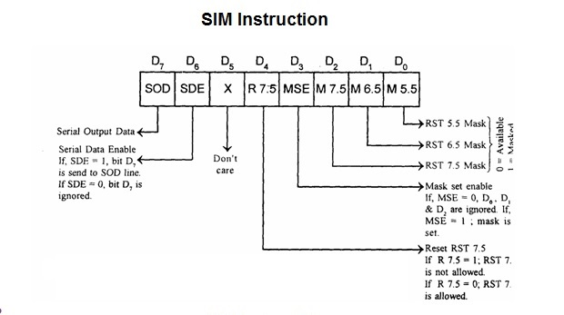
- 8085 (March 1976)
- Pin Diagram (8085)
-
- Architecture (8085)
-
- Flag Register (8085)
-
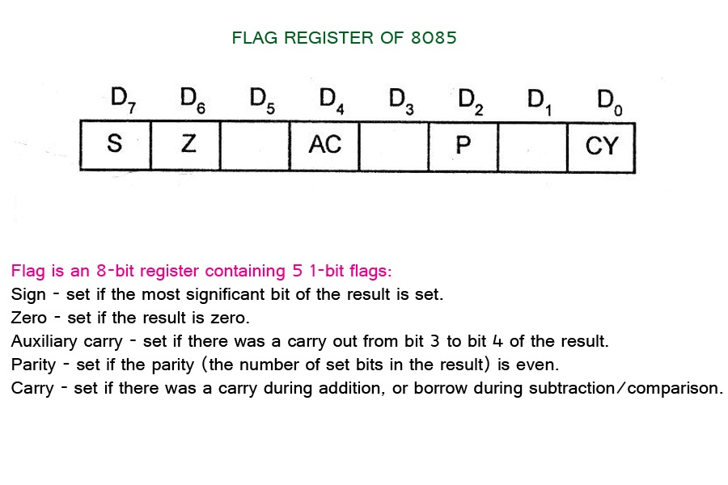
- 8255 (first half of the 1970)(PPI-Programmable Peripheral interface)is a multiport device connceted to microprocessor
- Original device
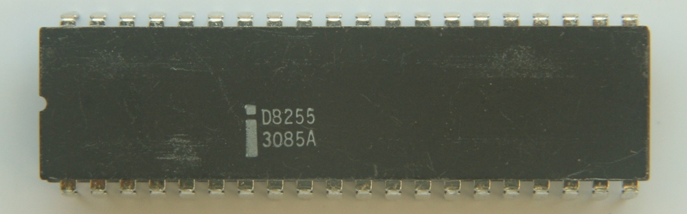
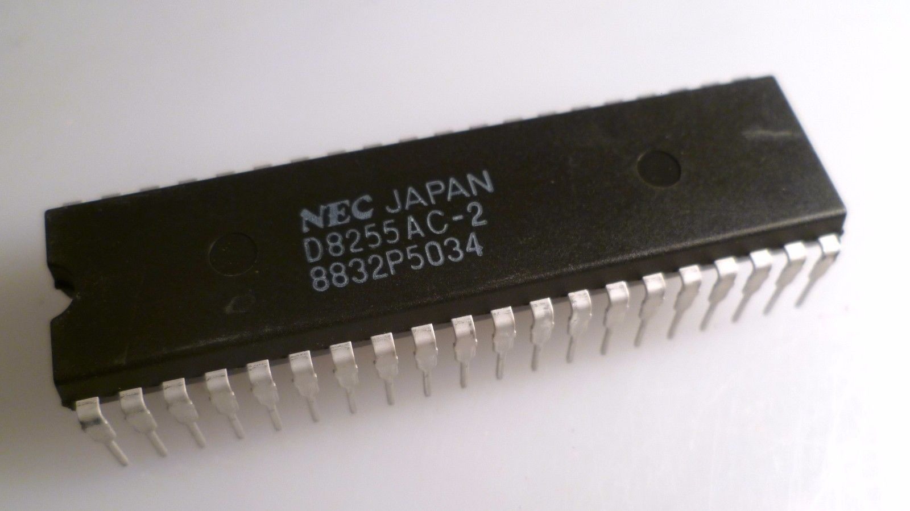
- Pin
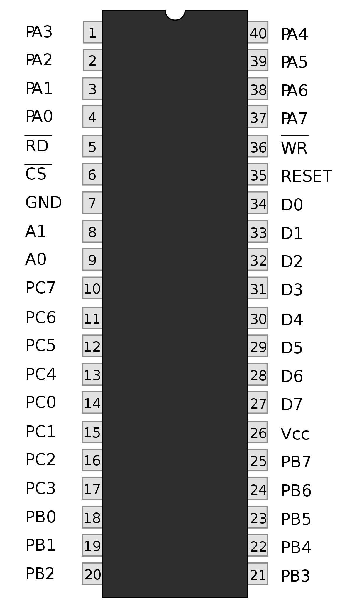
- Architecture
- Controlword Format
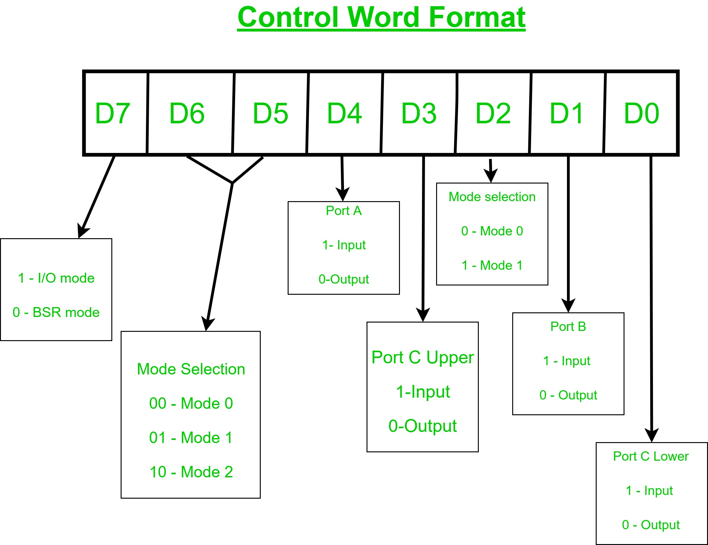
- Port A(8 bit)
- Port B(8 bit)
- Port C(upper 4 bit,lower 4 bit)
- Operting Modes
- Mode 0-Simple i/p o/p port (two 8 bit A,B two 4bit CUpper,CLower each operated either as i/p or o/p)
- Mode 1-Handshaking Port (Port A and Port B designed to used as <-- when used <--Port C (six pins)) works for their control)
- Mode 2-Bidirectional Port(Port A(only) use as Bidirectional when port A programmed as <-- port B used either Mode 1 or Mode 0.)
- 8259 Programmable Interrupt Controller (PIC) 5 h/w ans 2 h/w 8085 and 8086 respectively -connecting 8259 with CPU, Increase^ interrupt handling capability.
- PIC Image
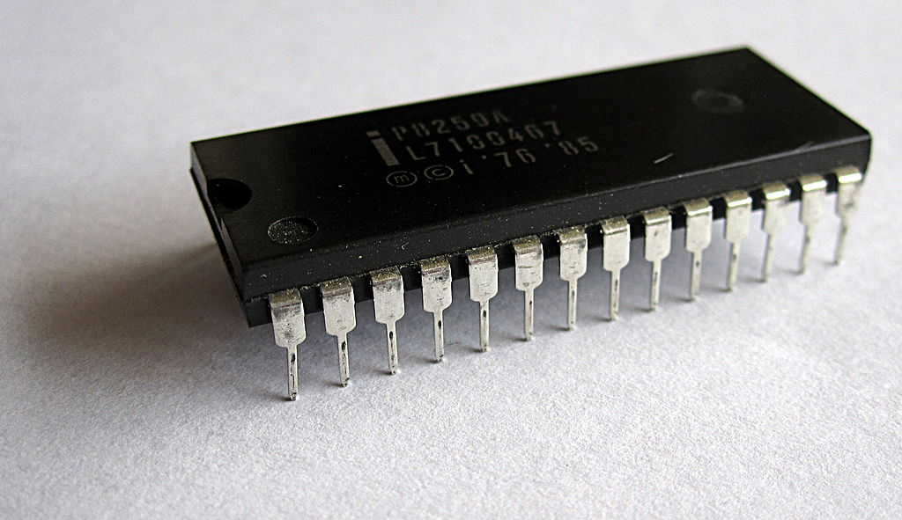
- Interrupt Interface
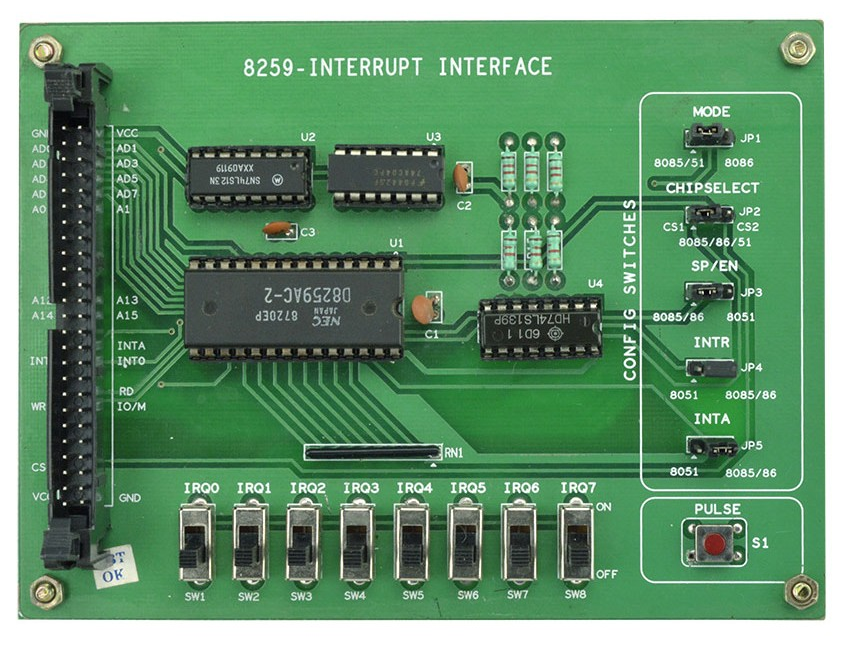
- Block Diagram of 8259
- Pin Diagram of 8259
- Functional Block Diagram of 8259
- Control logic
- Read Write logic
- Data bus buffer
- Interrupt Request Register (IRR)
- In-Service Register (ISR)
- Interrupt Mask Register (IMR)
- Priority Resolver (PR)
- Cascade buffer.(Expand interrupts of 8259 CAS0 CAS 1 CAS2 from master are cannected to the correspoindind pin of slave )
- Priority mode of Interrupt request 8259
- Fully Nested Mode
- Special Fully Nested Mode (SFNM)
- Rotating Priority Mode,
- Special Masked Mode, and
- Polled Mode.
- Intializing 8259
- 8086(1976) 16 bit- Co-processor- Intel 8087 (1980)
-
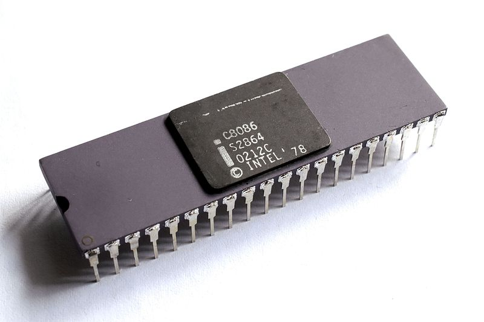
- Pin Diagram
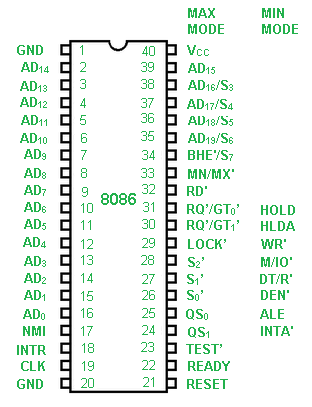
- Block diagram
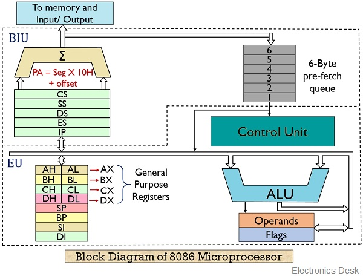
- Flag Register
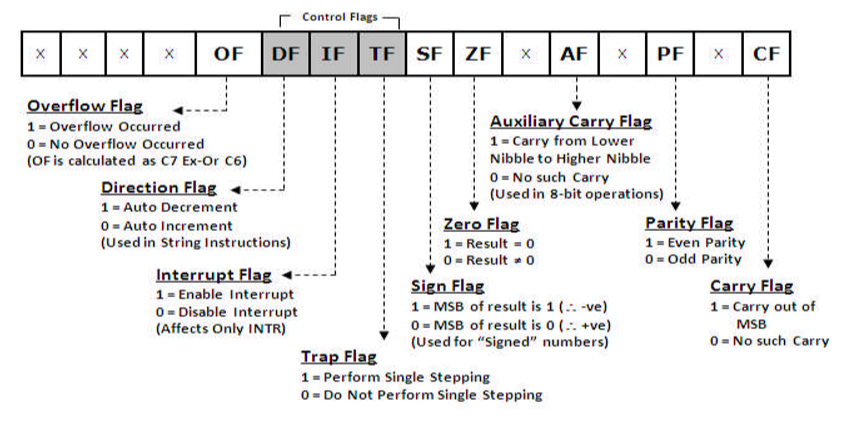
- 80286(February 1, 1982)-16 bit processor with addr line 24 bit
-
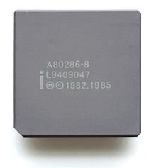
- Pin Diagram 24-bit addr 16-bit data
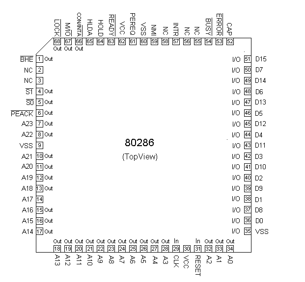
- Block diagram
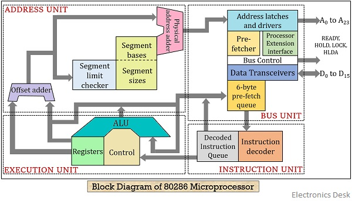
- GPR
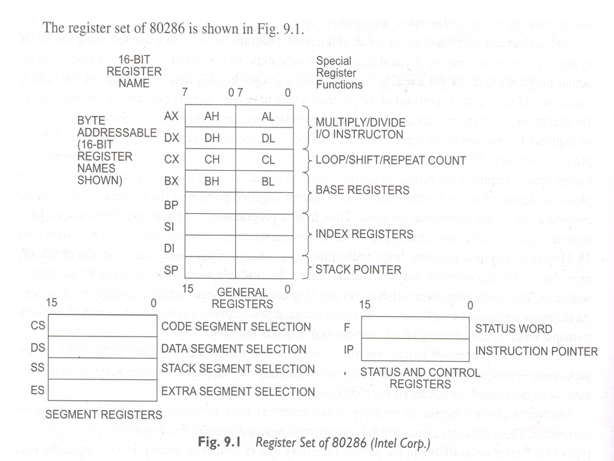
- Flag Reg.
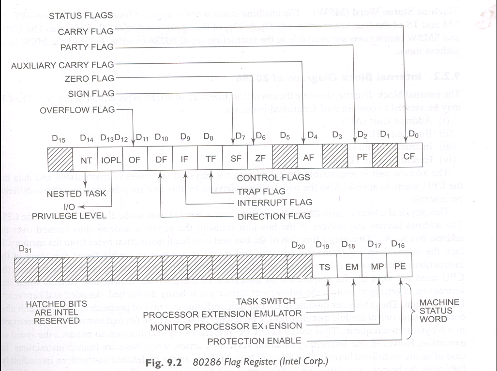
- Further
click
- 80386(32-bit 1985)
-
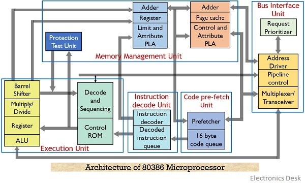
- Register of 80386
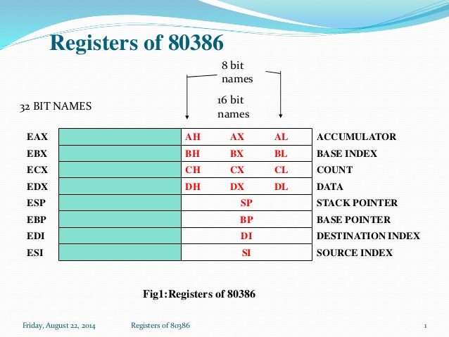
Back